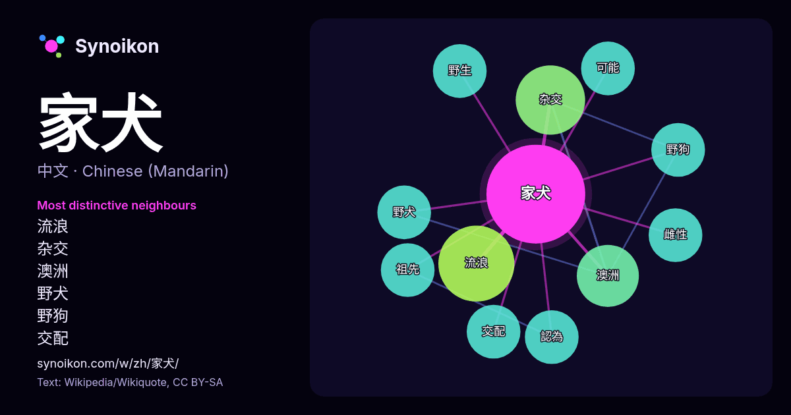

中文 · 热门词
家犬
“domestic dog” · 来自维基百科, Wikiquote 88 次出现中其周围的词。

最具特色的邻近词
- 流浪 7.0×
- 杂交 6.0×
- 澳洲 4.9×
- 野犬 4.0×
- 野狗 4.0×
- 交配 4.0×
- 野生 4.0×
- 雌性 4.0×
- 祖先 4.0×
- 可能 3.5×
- 認為 3.4×
× = 比维基百科普通文本中多出的倍数。
最常见的邻近词
- 流浪 6
- 杂交 5
- 澳洲 4
- 交配 3
- 可能 3
- 研究 3
- 祖先 3
- 認為 3
- 野犬 3
- 野狗 3
- 野生 3
- 雌性 3
- canis 2
- familiaris 2
- lupus 2
- 下降 2
- 不同 2
- 之前 2
- 人类 2
- 他們 2
上下文
- 犬（學名：Canis lupus familiaris）通稱狗，又称家犬，是灰狼（Canis lupus lupus）被晚期智人长期驯化后演化出的一个亚種 ，也是现生种群数量最多、多态性最丰富的犬科哺乳动物。狗是人類最早驯化的生物，时间大约在2.6～1.97万年前的末次冰盛期，早于新石器革命。通过之 Wikipedia snippets · 犬
- 犬科（Canidae）是哺乳纲食肉目的一科，包括狗、狼、豺、狐狸等。犬科动物是地球上较为成功的一种肉食性哺乳动物，包括大约三十七种现存的狼、胡狼、狐和其他野生动物及家犬。多数犬科为肉食性动物（如豺、薮犬、大部分狐），但也有一些为雜食性動物（如家犬、鬃狼、貉、側紋胡狼）。它们的身体构造已演化成特别适 Wikipedia snippets · 犬科
- 豺（學名：Cuon alpinus） 别名豺狗、红狼或是亞洲豺犬，是分布於東亞、南亞以及中亞的犬科動物。是豺属唯一現存的物種，與分布更廣的犬属相比，豺的磨牙更少而乳头更多。由於栖息地的破壞，猎物數量的减少，家犬傳染的疾病以及捕猎，野生豺的數量不到5000隻，并已被列為IUCN的濒危物种、瀕危野生動植 Wikipedia snippets · 豺
- 犬最早的文献记载最早源自《周礼》。 这类家犬虽然已驯化多年，曾被广泛用于看家护院和中国早期先民的狩猎活动。但由于缺乏合理的分类与正式命名，除了部分名犬外，其他只是按照民间的称谓，各地名称也有所不同。 中华田园犬广泛用于农村的看家护院和早期的狩猎。纯种中华田园犬（黄狗、柴狗），20世纪守家 Wikipedia snippets · 中华田园犬
- 200年前的南科考古遺址，可能是由台灣原住民引入培育。在中國大陸西南部，和東南亞一些地區，有部份狗和台灣犬很類似。 關於台灣引入家犬的紀錄，可以追溯至4,800年至4,200年前的大坌坑文化。臺南南科園區的南關里遺址菓葉層出土的完整雌性中型犬遺骸，是目前發現臺灣最早的家犬存在紀錄。除了完整狗的遺骸之外，南關里東遺址出了大量的狗骨遺留，是 Wikipedia snippets · 台灣犬
- 澳洲野犬–家犬杂交种（英語：Dingo–dog hybrid）是指澳洲野犬（丁格犬）与家犬的混种。当前澳大利亚散养家犬的数量可能比过去更高。由于杂交，所谓的“纯种”澳洲野犬的比例在过去几十年中一直在下降，并且据估计还在进一步下降。 由于澳洲野狗与家犬的持续杂交以及由此产生的杂交品种，如今澳大利亚野生犬 Wikipedia snippets · 澳洲野犬–家犬杂交种
- 郊狼犬或郊狼狗（英語：coydog）是雄性郊狼和雌性家犬交配产生的犬科杂交种（英语：Canid hybrid）。雌雄杂交个体均具有生育能力，可以成功繁殖四代。雄性家犬与雌性郊狼的杂交后代，则称为犬郊狼或狗郊狼（英語：dogote）。 这种杂交现象早在美洲殖民之前就已发生，黑化郊狼的黑色皮毛很可能是从 Wikipedia snippets · 郊狼犬
- 犬種育種，因此保留了高度的遺傳多樣性，被認為較接近早期家犬的形態，並經常作為研究家犬馴化、犬類演化及族群遺傳學的重要對象。 帕里亞犬並非單一犬種，而是一種犬類型（英語：dog type）或地方品種（英語：landrace）。不同地區的帕里亞犬 Wikipedia snippets · 帕里亞犬
更多词
于 2026-10-09 以默认设置预先计算（±5 个词，中等语料）。交互式图可用实时数据刷新。
界面为机器翻译，欢迎指正。